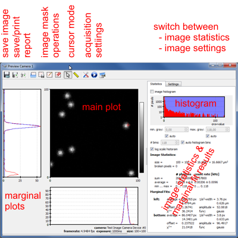
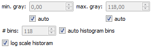

$$qf_commondoc_header.start$$ $$qf_commondoc_header.end$$
Overview
As already mentioned the preview can be started in the camera configuration boxes using the  and
and  buttons. A continuous preview reads single frames with only a short delay (configurable in the camera configuration) between them. The delay helps to not completely block the user interface. Every preview frame is displayed in the preview window:
buttons. A continuous preview reads single frames with only a short delay (configurable in the camera configuration) between them. The delay helps to not completely block the user interface. Every preview frame is displayed in the preview window:

In the center of the image you see a color-coded version of the current image. The plot axes are given in pixels. It is potentially surounded by marginal plots, which either contain an average along one axis or simply a horizontal/vertical cut through the image (in that case the position of the cut is marked by a red cross). In the marginal plots the data is shown in red and (possibly) fits to the data re shown in blue. Below the some information about the acquisition (exposure time, size, ...) are shown. Above the plot the current position of the mouse is shown in pixels and micrometers (taking the current detection objective into account). Also the grey value of the pixel below the mouse is shown.
Statistics
In the statistics tab on the right-hand side of the preview window, several image statistics informations are shown:
- The histogram (if activated) shows a grey histogram of the current image. You can choose whether the y-axis scaling should be linear or logarithmic below.
- The range that is spanned by the color coding of the main plot is indicated in blue in the histogram and may be set by the two edit field directly below this plot: If the "auto" boxes are checked, the color coding of the main plot spans the whole grey value range, if one is not checked the user may supply a value. This function is also activated when the histogram is deactivated! You may also decide how many bins the histogram should use.
- The image statistics show several basic image statistics values (the size of the image, how many broken pixels there are in the mask, ...). The sum, average and min/max of the image's grey values are given in the unit of the image pixels directly, or as rate in kHz, which is calculated by dividing the value by the exposure time!
- The marginal fit results show the fit parameters resulting from fits to the marginal plots. The depend on which settings are done for these (see below)
Settings
Normal Mode settings
In the settings tab on the right-hand side of the preview window, you set several options for the window and image display:
- The color palette select the type of color coding.
- The maks color select the color in which masked pixels are displayed.
- With rotation you can rotate the acquired image in steps of 90°.
- Using frame transform you can select some preprocessing options for the image (see image transformations).
- With the grid settings you can overlay a colored grid over the plot. You can select the distance between grid lines in pixels and also its color.
- The marginal plots combo decides about the type of marginal plot to be displayed and also allows to switch them off completely.
- The marginal evaluation sets which evaluation to perform for the marginal plots:
- average+variance: calculates the image-weighted mean and variance of the plots
- gaussian fit: fits a gaussian to the plot. The width of the gaussian is given as 1/e2 width (from center to 1/e2). If you need the 1/e2 diameter, mjultiply the value by 2!
- slit function fit: fits a slit function (sin(x)/x)2 to the plot, which is a good estimate for an airy disk. Here the width is the distance x1,Zero from the center of the slit function to the 1-th order (first) minimum, so the diameter of the function (minimum to minimum) is twice the given value x1,Zero.
Alignment Mode Settings
The "alignment modes" are special preconfigurations of the colorscale, frame transfrom and marginal fit mode. They can be used to quickly switch between different imaging modes. They can be configured on the configuration tab and can be activated with the following buttons in the toolbar:
 will activate the normal mode.
will activate the normal mode. will activate the alignment mode 1.
will activate the alignment mode 1. will activate the alignment mode 2.
will activate the alignment mode 2.
When one of these modes is activated, the preiew window switches to the selected configuration.
Image Transformations
For alignment purposes you can choose different frame transfrom modes:
- left-right half-image separates the image into two halves, one left of the center and one right of the center, each with size width/2 * height. Then the transfrom subtracts the two halves pixel-by-pixel from each other. This mode is useful to align the overlay of a dualview optics.
- top-bottom half-image separates the image into two halves, one above of the center and one below of the center, each with size width * height/2. Then the transfrom subtracts the two halves pixel-by-pixel from each other. This mode is useful to align the overlay of a dualview optics.
- equalize left/right intensity separates the image into two halves, one left of the center and one right of the center, each with size width/2 * height. Then the intensity in each half is scaled, so they both reach the same (higher of the two) average intensity. This mode is useful for dualview optics, where the intensities in the two channels are unequal.
- equalize top/bottom intensity separates the image into two halves, one above of the center and one below of the center, each with size width * height/2. Then the intensity in each half is scaled, so they both reach the same (higher of the two) average intensity. This mode is useful for dualview optics, where the intensities in the two channels are unequal.
Masking
You can also mask broken pixels. Then they are not taken into account for the color scaling and statistics. This function can be used to exclude broken pixels from your camera. The mask is altered by these buttons:
 removes all pixels from the mask (deactivates the mask)
removes all pixels from the mask (deactivates the mask) after a click on this button you can click single pixels that you want to exclude on the image. They will be added/be removed (on a second click) from the mask.
after a click on this button you can click single pixels that you want to exclude on the image. They will be added/be removed (on a second click) from the mask. This allows you to load a predefined mask from a file
This allows you to load a predefined mask from a file This saves the current mask to a file. The file is a text-file that will conatin the pixel coordinates of the broken pixels.
This saves the current mask to a file. The file is a text-file that will conatin the pixel coordinates of the broken pixels.
Measurements in the image
The button  activates the measure mode. Now you can click any two points on the image and their distance will be measured (displayed above the image, as long as the mouse hovers over the image). The distance is also indicated by a red line.
activates the measure mode. Now you can click any two points on the image and their distance will be measured (displayed above the image, as long as the mouse hovers over the image). The distance is also indicated by a red line.
The button  activates the standard mouse cursor mode. Now you can no longer edit the mask or measure distance. If the marginal is activated, you can move the center of the marginal image cuts to a new psoition (red cross) by a click on the image!
activates the standard mouse cursor mode. Now you can no longer edit the mask or measure distance. If the marginal is activated, you can move the center of the marginal image cuts to a new psoition (red cross) by a click on the image!
Image acquisition control
There are also buttons to control the image acquisition:
 /
/ will start and stop the continuous preview (video)
will start and stop the continuous preview (video) allows to edit the currently selected acqusition settings
allows to edit the currently selected acqusition settings will acquire one single preview frame and display it.
will acquire one single preview frame and display it.
Saving images/reports
You can save the current image:
 will save the current raw (unprocessed) frame in different formats (PNG, TIFF, ... color coded or as raw data). Please select the file type in the drop down field of the selection dialog.
will save the current raw (unprocessed) frame in different formats (PNG, TIFF, ... color coded or as raw data). Please select the file type in the drop down field of the selection dialog. will save the current frame as displayed, i.e. after a possible transformation (see dettings tab) in different formats (PNG, TIFF, ... color coded or as raw data). Please select the file type in the drop down field of the selection dialog.
will save the current frame as displayed, i.e. after a possible transformation (see dettings tab) in different formats (PNG, TIFF, ... color coded or as raw data). Please select the file type in the drop down field of the selection dialog. Will save the contents of the window (including marginals, statistics and fit results) to a PDF or PostScript file.
Will save the contents of the window (including marginals, statistics and fit results) to a PDF or PostScript file. Will print the contents of the window (including marginals, statistics and fit results).
Will print the contents of the window (including marginals, statistics and fit results).